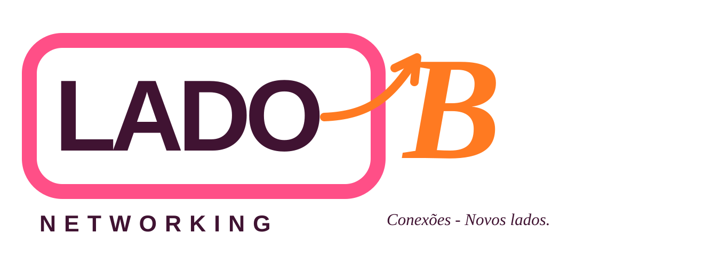
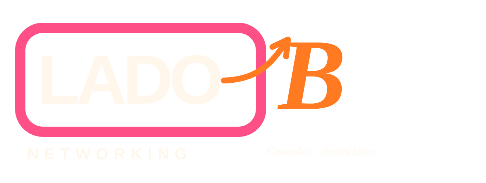
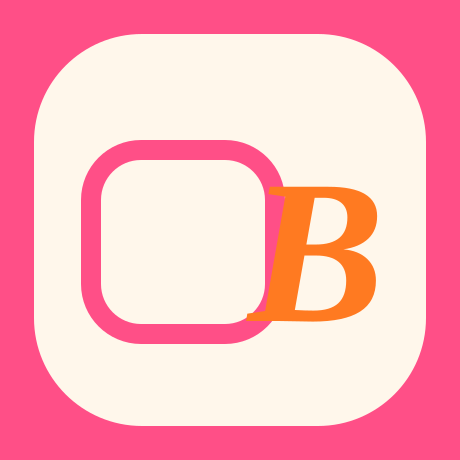
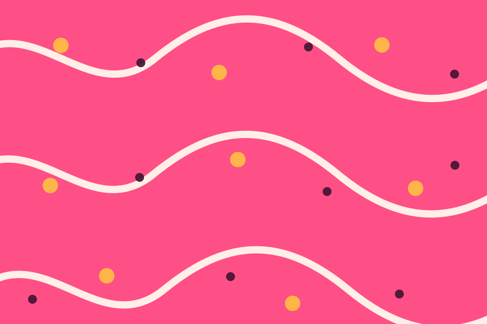
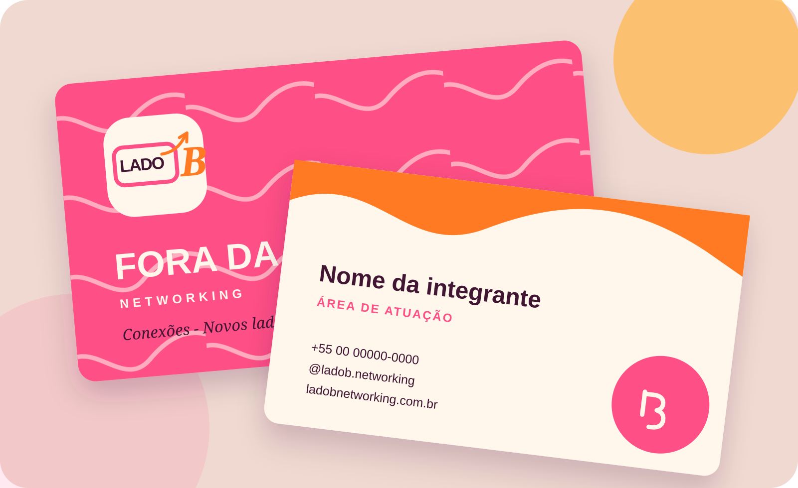
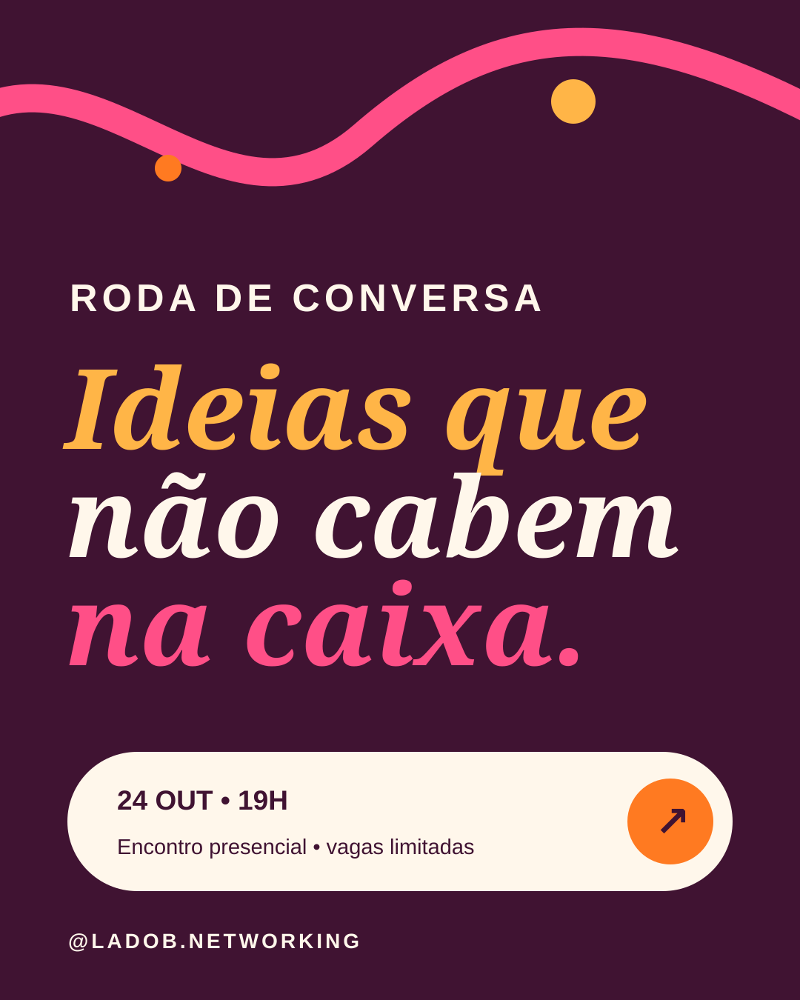
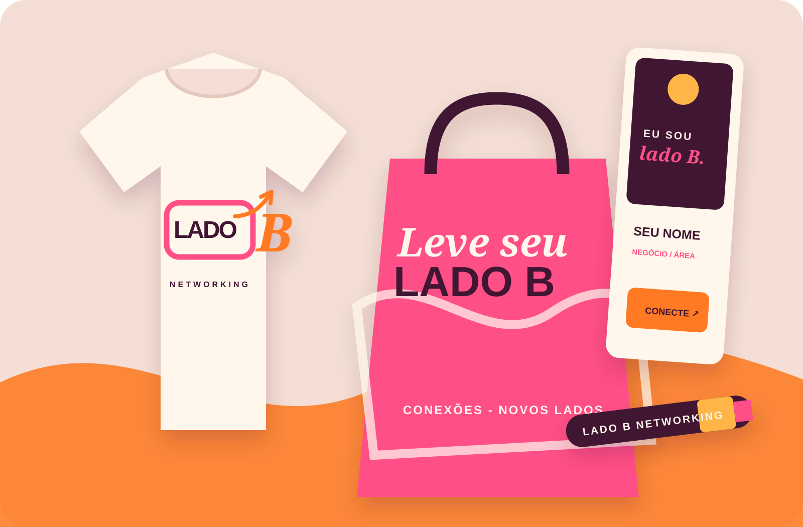
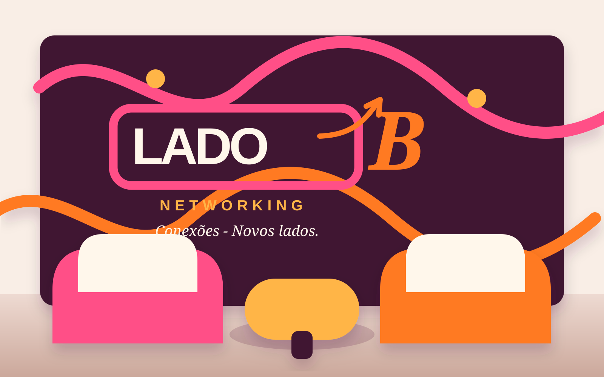

Acolher
Criar espaços seguros, leves e diversos para que as pessoas cheguem como são.

Identidade visual • 2026
Uma marca feminina, aberta e cheia de movimento para quem escolhe conhecer pessoas, ideias e negócios além do óbvio.
Conhecer a identidadeA ideia central
O Lado B nasceu do encontro de duas amigas dispostas a ampliar o próprio círculo. A marca transforma esse gesto em plataforma: acolher diferentes trajetórias, colocar boas conversas em movimento e abrir caminhos profissionais e relacionais.
“Lado B” não é o que sobra. É o que surpreende. É a perspectiva menos óbvia, a conversa que foge do pitch decorado e a conexão que continua depois do evento.
Criar espaços seguros, leves e diversos para que as pessoas cheguem como são.
Aproximar interesses, talentos e histórias com intenção — sem relações artificiais.
Fazer cada encontro gerar repertório, oportunidades e próximos passos possíveis.
Promessa
Conceito do símbolo
O próprio nome vira imagem: “LADO” permanece dentro do contorno, enquanto o “B” rompe o limite e ocupa um novo espaço. A seta registra esse movimento de saída.

Uso sobre fundo escuro
Símbolo minimalista • avatarPreserve ao redor da marca ao menos a largura de um dos pontos do símbolo multiplicada por três.
Abaixo de 120 px use apenas o símbolo. Tamanho mínimo digital do símbolo: 24 px.
Não distorça, gire, contorne, troque as cores ou aplique efeitos sobre a marca.
Paleta
Rosa e laranja assumem o protagonismo pedido. O ameixa dá profundidade e legibilidade; creme e amarelo equilibram o conjunto com acolhimento e luz.
Aa Bb Cc
Semibold · Bold · ItalicClareza para toda conversa.
Regular · Semibold · Extrabold
Grafismo
As ondas representam conversas, trajetórias e relações em movimento. Podem ocupar fundos, separar conteúdos ou conduzir o olhar. Os pontos devem aparecer com parcimônia, marcando encontros.
Como falamos
“Vem conhecer o lado que ainda não te apresentaram.”
“Uma roda. Muitas histórias. E nenhum pitch decorado.”
“A gente acredita que oportunidade boa começa com conversa sincera.”
A marca em movimento
As peças abaixo mostram como o sistema se comporta em relacionamento, divulgação e experiência presencial.




Arquivos do projeto
Todos os arquivos gráficos são vetoriais em SVG e podem ser editados no Figma, Illustrator, Inkscape ou Canva. Os dados pessoais usados nas peças são ilustrativos.